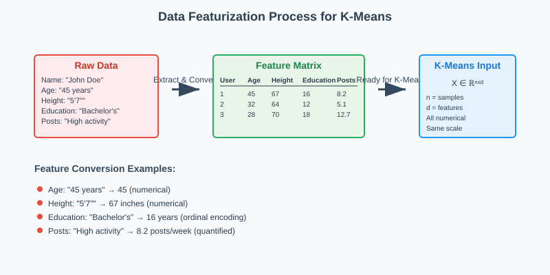
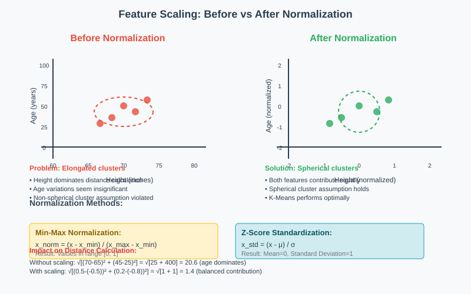
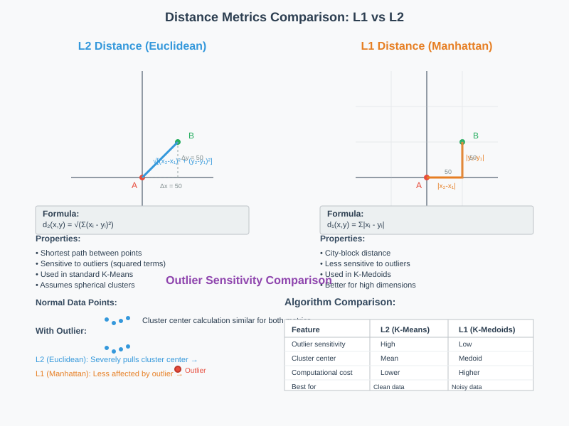
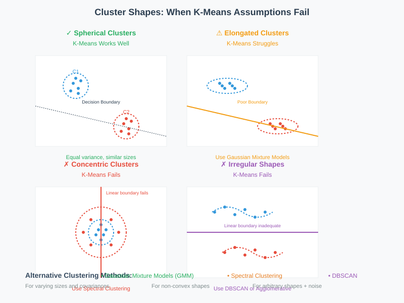
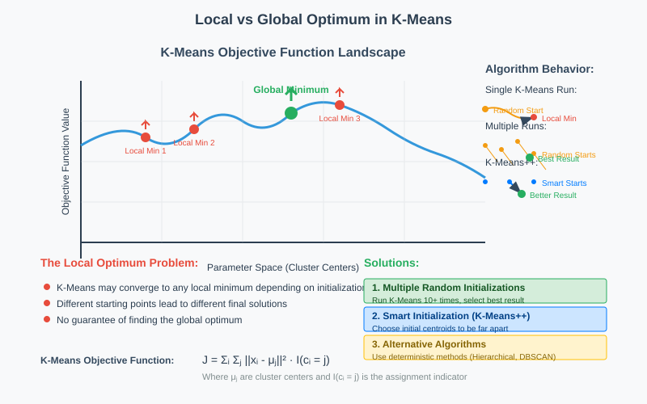

Beyond K-Means: Advanced Concepts and Troubleshooting
🧭 Quick Navigation
- Data Preprocessing Requirements
- Distance Metrics and Alternatives
- Troubleshooting K-Means Performance
- When K-Means Fails: Alternative Approaches
- Implementation Examples
- References & Further Reading
🔧 Data Preprocessing Requirements
Before applying K-Means clustering, several critical preprocessing steps must be addressed to ensure optimal performance and meaningful results.
The Five Essential Questions
1. Is Your Data Featurized?
K-Means requires data to be organized into a structured feature matrix where each row represents a data point and each column represents a specific feature.

Example: For a fitness app with user data including age, height, education, and forum activity:
- Raw data: Mixed formats (text, numbers, categories)
- Featurized data: Organized matrix with numerical representations
| User | Age | Height | Education | Forum_Posts |
|------|-----|--------|-----------|-------------|
| 1 | 45 | 67 | 16 | 8.2 |
| 2 | 32 | 64 | 12 | 5.1 |
2. Are Features Continuous Numbers?
K-Means operates on continuous numerical data. Categorical variables must be properly encoded:
- Age: Years (continuous) ✓
- Height: Convert to inches (continuous) ✓
- Education: Convert to years of education (continuous) ✓
- Categories: Use techniques like one-hot encoding or ordinal encoding
3. Are Numbers Commensurate (Same Scale)?
Feature scaling is crucial because K-Means assumes spherical clusters of similar size across all dimensions.

Problems with unscaled data: - Features with larger ranges dominate the distance calculation - Creates elongated, non-spherical clusters - Biases results toward high-magnitude features
Solutions:
4. Are There Too Many Features?
High-dimensional data can suffer from the "curse of dimensionality" and include irrelevant features.
Dimensionality Reduction with PCA:
Principal Component Analysis (PCA) identifies the most important features while reducing computational complexity.
Example: Recording spring motion with 5 cameras - Problem: 5-dimensional data for 1-dimensional motion - Solution: PCA extracts the single meaningful dimension
5. Can You Apply Domain Knowledge?
Leverage subject matter expertise to: - Remove irrelevant features before automated processing - Transform features to better fit K-Means assumptions - Apply domain-specific preprocessing steps
📏 Distance Metrics and Alternatives
K-Means' reliance on Euclidean distance creates specific assumptions that may not suit all data types or cluster shapes.
Understanding K-Means Limitations
K-Means assumes: - Spherical clusters: Equal variance in all directions - Similar cluster sizes: Euclidean distance favors balanced partitions - Continuous numerical features: Cannot handle categorical data directly

Alternative Distance Metrics
L1 Distance (Manhattan Distance)
Less sensitive to outliers compared to Euclidean (L2) distance:
K-Medoids Algorithm: - Uses medoids (actual data points) instead of means as cluster centers - Works with L1 distance and other non-Euclidean metrics - More robust to outliers - The medoid in 1D is the median
Handling Different Cluster Shapes

Non-spherical clusters require alternative approaches:
- Radial similarity measures: For concentric circular patterns
- Polar coordinate transformations: Convert Cartesian to polar coordinates
- Kernel methods: Map data to higher-dimensional space
- Agglomerative clustering: Build clusters hierarchically
Dealing with Non-Continuous Features
Challenges: - Text data - Binary YES/NO features - Categorical variables
Solutions: 1. Feature transformation: Convert to numerical representations 2. Alternative similarity measures: Jaccard similarity, Cosine similarity 3. Mixed-type clustering algorithms: Handle multiple data types simultaneously
⚡ Troubleshooting K-Means Performance
Speed Optimization Techniques
Triangle Inequality Optimization
Instead of calculating distances to all cluster centers, use geometric properties to eliminate unnecessary computations:
# Pseudocode for triangle inequality optimization
def assign_clusters_optimized(data_points, centroids):
for point in data_points:
min_distance = float('inf')
closest_cluster = None
for centroid in centroids:
# Use triangle inequality to skip distant centroids
if can_skip_based_on_triangle_inequality(point, centroid):
continue
distance = compute_distance(point, centroid)
if distance < min_distance:
min_distance = distance
closest_cluster = centroid
Addressing Local Optima

Multiple Random Initializations
Run K-Means multiple times with different starting points:
def kmeans_multiple_runs(data, k, num_runs=10):
best_clusters = None
best_cost = float('inf')
for run in range(num_runs):
clusters, cost = kmeans_single_run(data, k)
if cost < best_cost:
best_cost = cost
best_clusters = clusters
return best_clusters, best_cost
K-Means++ Initialization
Smart initialization that spreads initial centroids:
- Choose first centroid randomly
- For each subsequent centroid, choose with probability proportional to squared distance from nearest existing centroid
- Repeat until k centroids are selected
Where \(D(x_i)\) is the distance to the nearest centroid.
Convergence Criteria
Standard stopping conditions: - Maximum iterations reached - Centroid movement below threshold: \(||\mu_t - \mu_{t-1}|| < \epsilon\) - Objective function improvement below threshold - No cluster assignment changes
🔄 When K-Means Fails: Alternative Approaches
Unequal Cluster Sizes
Problem: K-Means favors equally-sized clusters due to its objective function.
Solutions:
Gaussian Mixture Models (GMM)
- Allow clusters with different covariances
- Handle varying cluster sizes and shapes
- Use Expectation-Maximization (EM) algorithm
Density-Based Clustering (DBSCAN)
- Finds clusters of varying shapes and sizes
- Robust to outliers
- No need to specify number of clusters
Outlier Sensitivity
K-Means issues with outliers: - Single outlier can significantly shift centroid - Creates poor cluster boundaries - Squared distance amplifies outlier effect
Robust alternatives: 1. K-Medoids: Use actual data points as centers 2. Trimmed K-Means: Remove percentage of farthest points 3. Robust distance metrics: Use L1 instead of L2 distance
Non-Spherical Cluster Shapes
Scenarios requiring alternatives: - Concentric circles - Elongated clusters - Irregular shapes
Alternative algorithms:
| Algorithm | Best For | Pros | Cons |
|---|---|---|---|
| DBSCAN | Arbitrary shapes, noise | No K needed, handles outliers | Sensitive to parameters |
| Spectral Clustering | Non-convex shapes | Handles complex shapes | Computationally expensive |
| Agglomerative | Hierarchical structure | Deterministic, interpretable | O(n³) complexity |
| Mean Shift | Unknown K, arbitrary shapes | No K needed, finds modes | Bandwidth selection |
💻 Implementation Examples
Data Preprocessing Pipeline
import numpy as np
from sklearn.preprocessing import StandardScaler
from sklearn.decomposition import PCA
from sklearn.cluster import KMeans
def preprocess_for_kmeans(data, n_components=None):
"""
Complete preprocessing pipeline for K-Means
"""
# Step 1: Handle missing values
data_clean = handle_missing_values(data)
# Step 2: Convert categorical to numerical
data_numerical = encode_categorical_features(data_clean)
# Step 3: Scale features
scaler = StandardScaler()
data_scaled = scaler.fit_transform(data_numerical)
# Step 4: Apply PCA if specified
if n_components:
pca = PCA(n_components=n_components)
data_final = pca.fit_transform(data_scaled)
return data_final, scaler, pca
return data_scaled, scaler, None
# Usage example
processed_data, scaler, pca = preprocess_for_kmeans(raw_data, n_components=10)
Robust K-Means Implementation
def robust_kmeans(data, k, max_runs=10, init_method='k-means++'):
"""
K-Means with multiple initializations and outlier handling
"""
best_inertia = float('inf')
best_model = None
for run in range(max_runs):
# Initialize with K-Means++
kmeans = KMeans(
n_clusters=k,
init=init_method,
n_init=1,
random_state=run
)
# Fit model
kmeans.fit(data)
# Track best result
if kmeans.inertia_ < best_inertia:
best_inertia = kmeans.inertia_
best_model = kmeans
return best_model
# Compare with K-Medoids for outlier robustness
from sklearn_extra.cluster import KMedoids
def compare_clustering_methods(data, k):
# Standard K-Means
kmeans = KMeans(n_clusters=k, random_state=42)
kmeans_labels = kmeans.fit_predict(data)
# K-Medoids (more robust to outliers)
kmedoids = KMedoids(n_clusters=k, random_state=42)
kmedoids_labels = kmedoids.fit_predict(data)
return {
'kmeans': {'labels': kmeans_labels, 'inertia': kmeans.inertia_},
'kmedoids': {'labels': kmedoids_labels, 'inertia': kmedoids.inertia_}
}
Google Colab Integration

Try the interactive examples in our Colab notebook featuring: - Real-world dataset preprocessing - Comparison of clustering algorithms - Visualization of different distance metrics - Performance optimization techniques
📚 References & Further Reading
Academic Papers
- Arthur, D., & Vassilvitskii, S. (2007). "k-means++: The advantages of careful seeding." SODA '07. ArXiv:0803.0814
- Jain, A. K. (2010). "Data clustering: 50 years beyond K-means." Pattern Recognition Letters, 31(8), 651-666.
- Steinhaus, H. (1956). "Sur la division des corps matériels en parties." Bulletin L'Académie Polonaise des Sciences, 4(12), 801-804.
Implementation Resources
- Scikit-learn K-Means Documentation: sklearn.cluster.KMeans
- Scikit-learn-extra K-Medoids: KMedoids implementation
- DBSCAN Alternative: sklearn.cluster.DBSCAN
Datasets for Practice
- UCI Machine Learning Repository: Clustering datasets
- Kaggle Clustering Competitions: Customer segmentation challenges
Advanced Topics
- Gaussian Mixture Models: sklearn.mixture.GaussianMixture
- Spectral Clustering: sklearn.cluster.SpectralClustering
- Hierarchical Clustering: scipy.cluster.hierarchy
Books
- Pattern Recognition and Machine Learning by Christopher Bishop (Chapter 9: Mixture Models and EM)
- The Elements of Statistical Learning by Hastie, Tibshirani, and Friedman (Chapter 14: Unsupervised Learning)